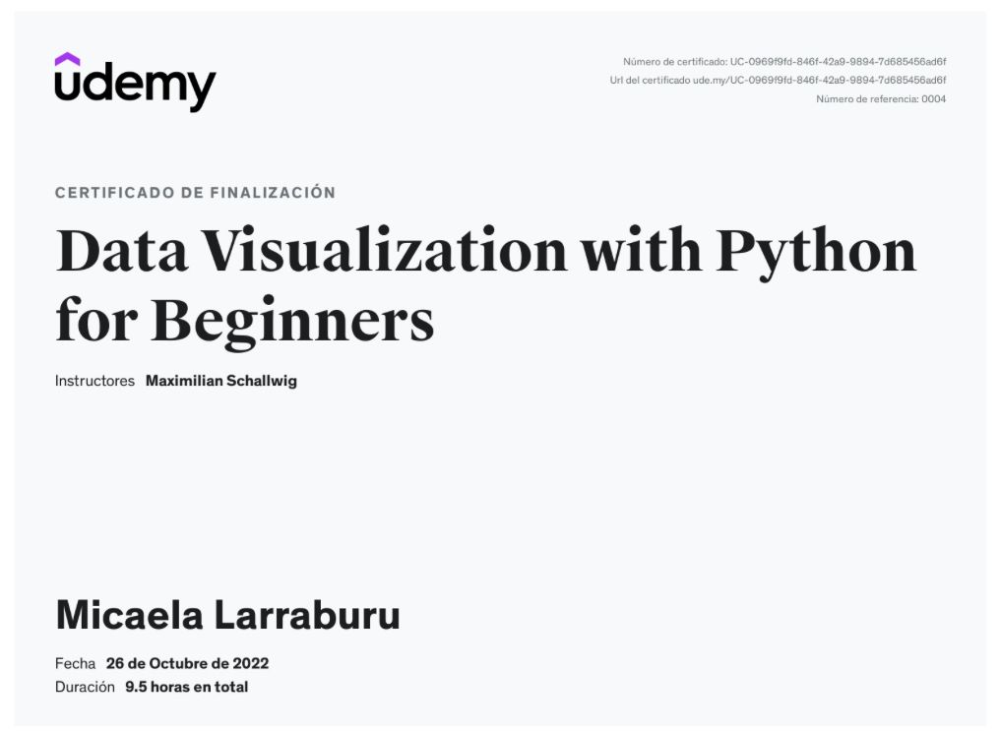

Habilidades avanzadas para crear Cuadros de Mando y visualizaciones de datos en Excel, expertos en la creación de análisis interactivos. A partir del curso soy capaz de crear rapidamente Cuadros de Mando, Informes y Aplicaciones Interactivas
Formacion Académica
Aprender análisis de datos con Pandas. Explorar diferentes gráficos y cómo aplicarlos a diferentes conjuntos de datos. Aplicar la visualización de datos a grandes conjuntos de datos Visualizar una red social con NetworkX. Convertir dash plots en visualizaciones interactivas para las principales versiones de Android.
Manejo de la plataforma y la interfaz Looker y LookML desde lo más básico. Uso de las mejores prácticas para usar Looker y LookML Confianza adquirida en el uso de Looker para cualquier proyecto Soy capaz de crear análisis utilizando Looker.